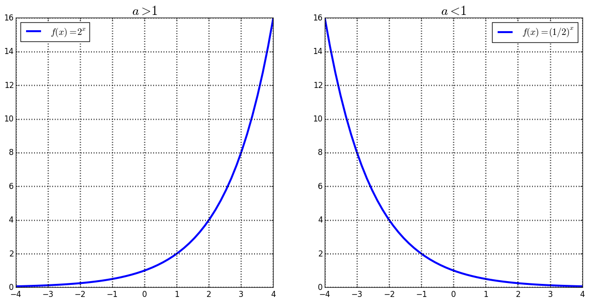
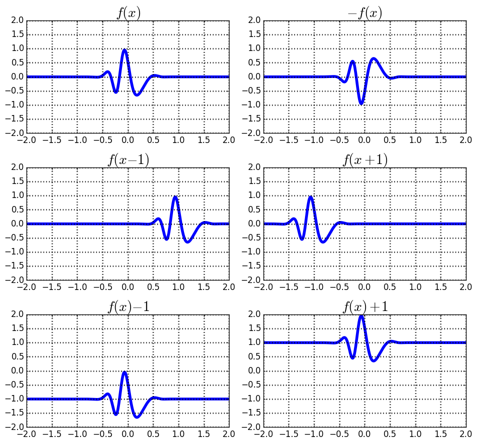

| « 4.1 | up | 4.3 » |
4.2 — Exponential Functions
An exponential function is one of the form: $$ f(x) = a^x, \;\; a \gt 0, \; a \neq 1 $$
Properties of Exponential Functions
| Domain | $(-\infty, \infty)$ |
| Range | $(0, \infty)$ |
| $x$-intercepts | none |
| $y$-intercepts | $(0,1)$ |
| Increasing | when $a \gt 1$ |
| Decreasing | when $a \lt 1$ |
| Vertical Asymptotes | none |
| Horizontal Asymptotes | y=0 |
Translating and Reflecting Functions

Graph the following:
- $y=2^x$
- $y=2^{-x}$
- $y=-2^x$
- $y=-2^{-x}$
- $y=2^x-1$
- $y=2^{x-1}$
- $y=2^{1-x}$
- $y=1-2^x$